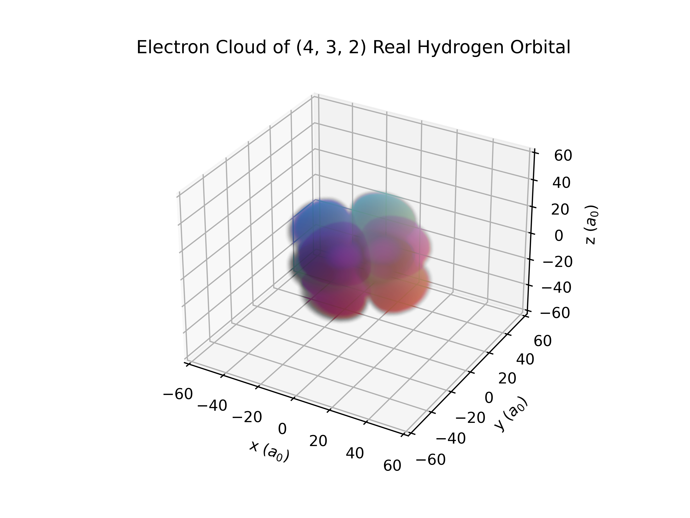
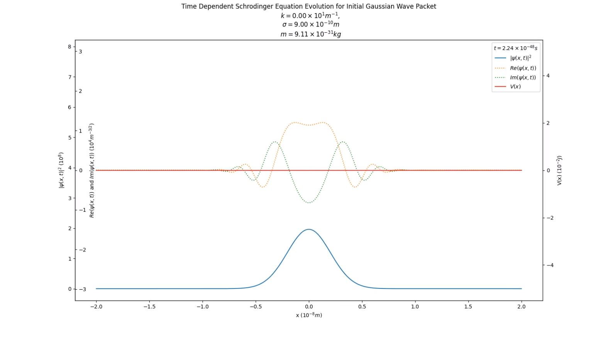
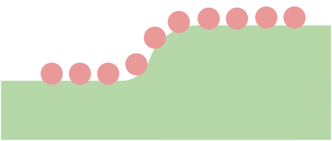
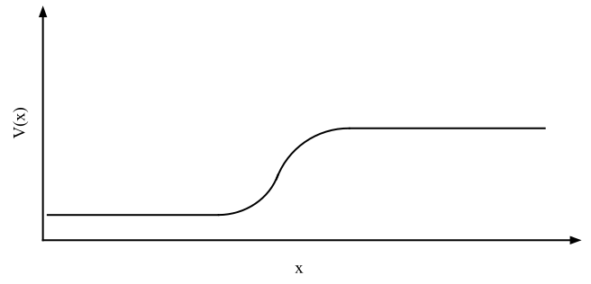
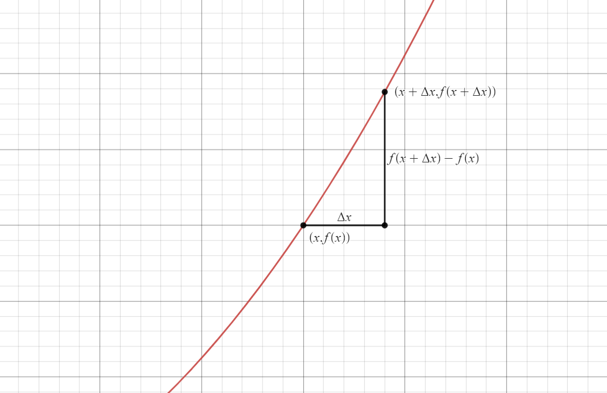
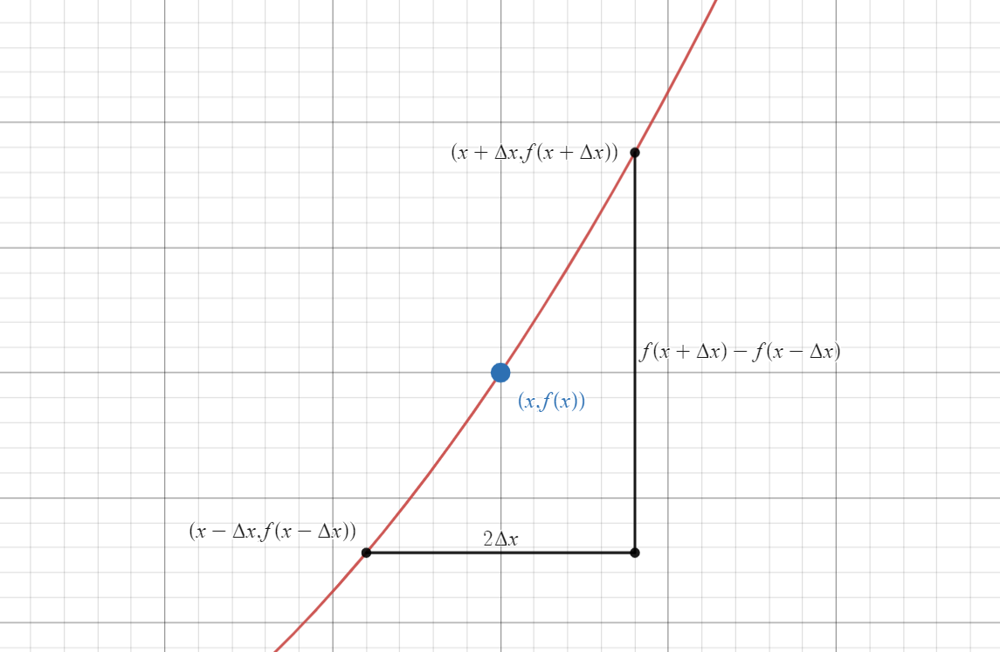
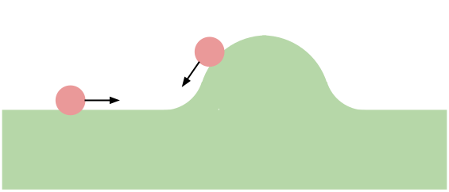

The Math Behind the Impossible
Numerically Solving the Time Dependent Schrodinger Equation - Liam Ilan
Some things don’t make sense. Here’s an example:
When my grade 8 science teacher said that, it just didn’t sit right. It seemed as absurd as saying that a dog can be red and blue at the same time, or that it can be both rainy and sunny at the same time, or that a cat can be both alive and dead at the same time, or that...
Anyways, I’m graduating highschool in around a week, and figured it’s about time to make sense of this conundrum, but I don’t want to just understand the math. I want to be able to visualize the phenomena. Furthermore, I want to build these visualizations myself.
This articles goal is to show you the process, the math, and the physics behind making animations like,
The Wave Function
Let’s start with the statement above, light is both a particle and a wave. What do we mean by this?
In quantum mechanics, photons, electrons, and in fact all elementary particles, can be described by complex valued matter waves, found through the wave function, \(\psi(x, t)\). The amplitude of this wave function is related to how likely we are to observe a particle at any given position. More specifically, the value of the probability distribution function describing the position of the particle can be found by, $$|\psi(x, t)|^2$$


It thus makes sense that \(|\psi(x, t)|^2\) should follow the same rules that probability distribution functions do. Specifically, the the sum of all probabilities that the particle is observed at any given point, must be equal to 100%, or $$\int_{-\infty}^{\infty} |\psi(x, t)|^2 \,\partial{x} = 1$$ We will use this property later on to increase the accuracy of our animations.
One of the notable consequences of describing elementary particles as waves, is that all particles must exhibit wave phenomena (interference, refraction, etc.). This is the reason light from stars shifts red when they travel farther from us. Photons of light can exhibit the doppler effect, a wave phenomenon.
The Schrodinger Equation
But how do we find valid matter waves to animate? Valid solutions to the wave function can be found via the time dependent schrodinger equation, $$i \hbar \frac{\partial}{\partial t} \psi(x, t) = -\frac{\hbar}{2m} \frac{\partial^2}{{\partial x}^2} \psi(x,t) + V(x)\psi(x,t)$$ where \(\psi(x, t)\) is the wave function, \(\hbar\) is the reduced planck's constant, \(m\) is the mass of the particle, and \(V(x)\) is the potential energy at a given point \(x\).
P.S. Deriving this equation is not within the scope of this article, however, an excellent article on this topic can be found here.
The time dependent Schrodinger equation appears extremely daunting, and if you’re like me, solving it seems impossible. Luckily, we don’t need to solve it. If we set the problem up correctly, we can let a computer do it for us.
Potential Energy
Before we begin, we have one last term to define, \(V(x)\). I said earlier that \(V(x)\) is the potential energy at a given point, but what does that mean?
Let’s go back to classical physics, a ball, and a hill.

At any point in space, we can calculate the potential energy of the ball, as a function of horizontal displacement, $$V(x) = mgh(x)$$
From there, we can plot the potential energy,

Notice how in a sense, \(V(x)\) represents how much energy is needed to get from a point of \(0\) potential, to a point \(x\). A point with a higher potential requires more energy to get to.
In the schrodinger equation, \(V(x)\) is similar to the above example. We are still representing the quantity of potential energy, however this time, instead of having a hill, we might have an insulating layer, stopping current in a circuit. This insulating layer would have a higher potential, as more energy is required to move through it.
One of the important things to note is that this potential energy is not the same as voltage. Voltage measures a quantity of energy per charge. Here, we measure a quantity of energy, period.
Approximating the Schrodinger Equation
Now that we have all of our terms set up, let’s go back to the Schrodinger Equation, $$i \hbar \frac{\partial}{\partial t} \psi(x, t) = -\frac{\hbar}{2m} \frac{\partial^2}{{\partial x}^2} \psi(x,t) + V(x)\psi(x,t)$$ This is a second order partial differential equation, and while we could try to find exact analytical solutions, it seems like a lot of work.
So let’s not do that! For our final animations, we don’t really care about exact solutions. It’s good enough, to be close enough.
The Finite Difference Method
Let’s go back to fundamentals, with the definition of a derivative, $$\frac{d}{dx} f(x) = \lim_{\Delta x \to 0} \frac{f(x + \Delta x) - f(x)}{\Delta x}$$
In this definition of the derivative, we use infinitesimally small values of x. The problem is that we can’t do that on a computer. What we can do however, is use very very small, finite steps. We call this method, the “Finite Difference Method”.
We can use this to find the first time derivative of the wave function, present on the left side of the schrodinger equation, $$\frac{\partial}{\partial t} \psi(x, t) = \lim_{\Delta t \to 0} \frac{\psi(x, t + \Delta t) - \psi(x, t)}{\Delta t}$$
That wasn’t too bad, but what about the second spacial derivative of displacement? Well, let’s start with the first derivative with respect to displacement, in fact let’s repeat the same process we did for the time derivative, $$\frac{\partial}{\partial x} \psi(x, t) = \lim_{\Delta x \to 0} \frac{\psi(x + \Delta x, t) - \psi(x, t)}{\Delta x}$$
Uh oh... we have a small problem here. We want our simulation to act the same in all directions. When \(\Delta x\) is infinitesimally small, that isn’t an issue, however because \(\Delta x\) is finite, we need to redefine the derivative slightly... $$\frac{d}{dx} f(x) = \lim_{\Delta x \to 0} \frac{f(x + \Delta x) - f(x - \Delta x)}{2 \Delta x}$$ You will find that this definition is, for infinitesimally small steps, identical to our first definition, however for finite steps, this definition is spatially symetric.


From here, we can find the first spatial derivative of \(\psi(x,t)\), $$D(x, t) = \frac{\partial}{\partial x} \psi(x, t) = \lim_{\Delta x \to 0} \frac{\psi(x + \Delta x, t) - \psi(x - \Delta x, t)}{2 \Delta x}$$ And the second derivative, $$ \begin{aligned} \frac{\partial^2}{{\partial x}^2} \psi(x, t) &=\frac{\partial}{\partial x} D(x, t)\\ &=\lim_{\Delta x \to 0} \frac{D(x + \Delta x, t) - D(x - \Delta x, t)}{2 \Delta x} \\ &= \lim_{\Delta x \to 0} \frac{\frac{\psi(x + 2\Delta x, t) - \psi(x, t)}{2 \Delta x} - \frac{\psi(x, t) - \psi(x - 2 \Delta x, t)}{2 \Delta x}}{2 \Delta x} \\ &= \lim_{\Delta x \to 0} \frac{\psi(x + 2 \Delta x, t) - 2 \psi(x, t) + \psi(x - 2 \Delta x, t)}{4 {\Delta x}^2} \\ &= \lim_{\Delta x \to 0} \frac{\psi(x + \Delta x, t) - 2 \psi(x, t) + \psi(x - \Delta x, t)}{{\Delta x}^2} \\ \end{aligned} $$
From here on out, we will drop the limits to reflect the fact that we are using finite steps.
We can now rewrite the schrodinger equation with our substitutes for the derivative. $$ i \hbar \frac{\psi(x, t + \Delta t) - \psi(x, t)}{\Delta t} = -\frac{\hbar}{2m} \left( \frac{\psi(x + \Delta x, t) - 2 \psi(x, t) + \psi(x - \Delta x, t)}{{\Delta x}^2} \right) + V(x)\psi(x,t) $$
We can now rearange this formula, such that \(\psi(x, t + \Delta t)\) is isolated, $$ \psi(x, t + \Delta t) = \left(\frac{1}{2m} \right) \left(\frac{\Delta t}{{\Delta x}^2} \right) \left( \psi(x + \Delta x, t) - 2 \psi(x, t) + \psi(x - \Delta x, t) \right) - \left(\frac{i}{\hbar}\right)(\Delta t)V(x)\psi(x,t) + \psi(x,t) $$
This formula let's us predict the value of \(\psi\) in a future timestep, in terms of the current state of \(\psi\). By recursively applying this formula, we can obtain wave functions further than one timestep away.
Initial Value
But what about that initial value? The algorithim we built let's us calculate states of \(\psi\) in terms of it's past states, but at \(t=0\), there is no past state of \(\psi\). We need some some set of initial conditions that represents the information we have on the particle at \(t=0\).
A commonly used initial value is the Gaussian Wave Packet. The Gaussian Wave Packet has a very important property that makes it a good choice for initial conditions, which is that taking the magnitude of the gaussian wave packet, and squaring it, results in a probability distribution function identical to a normal distribution, thus, if we were to observe a particle at some position \(x_0\), this distribution would tell us how likely we would be to find the particle again at any point \(x\). Because of this, it reflects the initial information we have on the particle. The formula for the Gaussian Wave Packet is, $$\psi(x, 0) = \left(e^{ikx}\right)\left(e^{-\frac{1}{2}\left({\frac{x-x_0}{\sigma}}\right)^2}\right)$$ where \(\sigma\) is the standard deviation of the wave packet, \(x_0\) is the initial mean, and \(k\) is the wave number.
The wave number (\(k\)) is important for a couple reasons reason. 1st, it is linearly correlated to the momentum of the particle, $$p = hk$$ 2nd, it is related to the wavelength of the particle, $$k = \frac{2 \pi}{\hbar}$$ A negative \(k\) will result in momentum in the negative direction, and a positive \(k\) will result in momentum in a positive direction.
Kinks in the System
Everything we’ve done up until now is great and all, but the real world rarely works this simply. In reality, we are missing two more components to our solution, normalization, and boundary conditions.
Normalization
One limitation of real computers is that numbers and operations are not always exact. As we recursively apply our algorithm, $$ \psi(x, t + \Delta t) = \left(\frac{1}{2m} \right) \left(\frac{\Delta t}{{\Delta x}^2} \right) \left( \psi(x + \Delta x, t) - 2 \psi(x, t) + \psi(x - \Delta x, t) \right) - \left(\frac{i}{\hbar}\right)(\Delta t)V(x)\psi(x,t) + \psi(x,t) $$ numerical instability will arise. As we run the simulation, the condition we layed out at the very start of this article, $$\int_{-\infty}^{\infty} |\psi(x, t)|^2 \,\partial{x} = 1$$ may no longer be true.
In order to correct for this, after each application of our algorithim, we normalize \(\psi\). This process is as follows, $$ \text{let } \psi_0 = \text{the resulting wave function after an itteration of our algorithim} $$ $$ \text{let } I = \int_{-\infty}^{\infty} |\psi_0(x, t)|^2 \,\partial{x} $$ We can rearrange this, $$I^{-1}\int_{-\infty}^{\infty} |\psi_0(x, t)|^2 \,\partial{x} = 1$$ $$\int_{-\infty}^{\infty} \frac{|\psi_0(x, t)|^2}{I} \,\partial{x} = 1$$ Thus, $$\int_{-\infty}^{\infty} \frac{|\psi_0(x, t)|^2}{I} \,\partial{x} = \int_{-\infty}^{\infty} |\psi(x, t)|^2 \,\partial{x} = 1$$ Dropping the integrals, $$\frac{|\psi_0(x, t)|^2}{I} = |\psi(x, t)|^2$$ $$\frac{|\psi_0(x, t)|}{\sqrt{I}} = |\psi(x, t)|$$ Since \(I \in \mathbb{R}\), $$\frac{\psi_0(x, t)}{\sqrt{I}} = \psi(x, t)$$
After every single calculation using our algorithm, we can compute the resulting integral, \(I\), and apply this normalization to obtain a more accurate result, correcting for minor numerical instability.
Boundary Conditions
In the math world, we can say that the domain of \(\psi(x,t)\) is infinite. In the computer world, however, we don’t have infinite memory, so we need to set bounds to our simulation.
There is a problem however, when attempting to evaluate \(\psi\) at a boundary.
Let’s take an example, say that we set our left most boundary (the negative direction) to \(0\), and then try to evaluate \(\psi(0, t + \Delta t)\), $$ \psi(0, t + \Delta t) = \left(\frac{1}{2m} \right) \left(\frac{\Delta t}{{\Delta x}^2} \right) \left( \psi(\Delta x, t) - 2 \psi(0, t) + \psi(-\Delta x, t) \right) - \left(\frac{i}{\hbar}\right)(\Delta t)V(0)\psi(0,t) + \psi(0,t) $$ In order to find \(\psi(0, t + \Delta t)\), we need to know \(\psi(-\Delta x, t)\), however \(-\Delta x\) is outside the bounds (\(-\Delta x\ \lt 0\)). How do we handle this?
Well, it turns out that there are a couple ways, none of which are correct or incorrect. For my simulation, I simply assumed that \(\psi\) at the boundary is \(0\). There are many other valid boundary conditions, including purely reflective, absorptive, and ring boundary conditions. The topic of other boundary conditions is a bit beyond the scope of this article, however is an excellent jumping off point for future work.
Some Cool Results
I implemented the algorithm in Python with Matplotlib here. For the programmers out there, instructions for how to play around with the code and generate your own animations are in README.md.
Here are some interesting animations I created with the software I built,
Wrapping it Up
To understand everything I'm about to tell you, You need to do something first. You need to believe in the impossible. Can you do that? Good. - Barry Allen, Fastest Man Alive
By far, the coolest of all of the animations I generated, is this one,
What we observe here, is a particle, of some energy, a barrier of significantly higher potential. In classical physics, a hill with more potential energy than a particle will always stop the particle from passing.

In quantum physics, this is no longer true. Particles can “tunnel” through barriers with higher potential energy than the particles themselves. We call this phenomenon, quantum tunneling, and it is the closest we will ever get to phasing through walls like the flash.

References
Copyright © 2023 Liam Ilan